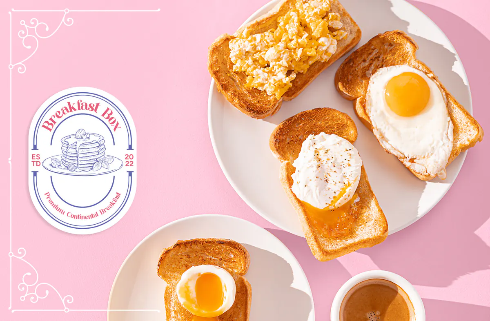

The short version
Byte’s new cloud-kitchen restaurant needed a premium but playful identity. The vintage, pastel brand brought in 150–200 orders a day for four months.
01 / ContextAbout the client
Byte Technology Systems was a Y-Combinator funded food delivery start-up based in Lahore, Pakistan. The start-up sought to utilize smartphone apps and similar technologies to help deliver good quality food to customers at affordable and accessible prices throughout the city.
02 / The challengeWhat needed solving
Byte wanted to launch a new online cloud kitchen based restaurant on their app. This restaurant brand, called Breakfast Box, aimed to provide high quality intercontinental breakfast items such as croissants, pancakes, french toast, muffins, etc conveniently at affordable prices to a Pakistani audience. Byte needed branding and visual designs that would market and sell the products.
03 / My roleWhat I did
I researched on various art styles, developed initial mood boards and reference boards and used the research and data to come up with various visual directions that the brand could take for a successful launch on the app. Based on my research and the initial feedback from upper management, I refined the brand identity and presented steps on how to launch the brand on the platform. The qualities that I derived for the brand were: “premium” and “elegant” yet “playful” and “light-hearted”.
04 / ApproachHow I worked it out
After the creative direction of the brand was finalized, I researched on the photography and aesthetics of the food products that the brand aimed to sell. This helped in creating the art direction of the brand including photography style, colours and typography. This was followed by development of the logo and other visual design collateral for the brand and its products. The logo consists of the name of the restaurant written in a rounded manner at the top. The words “Premium Continental Breakfast” are written at the bottom to signify the restaurant's primary offering of cuisine. At the center is an image of a stack of pancakes drawn in a style that pays homage to old etching drawings. The words ESTD and 2022 are written on either sides to show the legacy of the brand.
05 / ResultsWhat happened
The outcome was a vintage but minimal aesthetic branding style with pastel colours all of which signified a high end premium brand. The launch ready brand identity included the logo, typography, colour palette, social media strategy and sample social media posts. Vintage and pastel colours were an effective way to make breakfast, bakery and confectionery items look premium and high end.